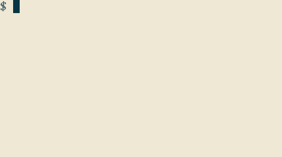

Rover -- simple file browser for the terminal
Last updated on
Rover is a small file browser that aims to be simple, fast and portable.
Feature overview:
- multi-tab single panel directory listing
- navigation with vi-like key bindings
- file opening with $PAGER or $EDITOR
- open $SHELL in the current directory
- create/rename/delete single files and directories
- copy/move/delete multiple files/directories
Rover has a Terminal User Interface (TUI) designed to fit in a small window. There are ten tabs, but only one is visible at each time, selected by keys 0-9. The number of the current active/visible tab is shown at the top-right corner. The starting path for each tab can be given as command-line arguments; unassigned tabs will start at the current working directory. The current directory of the active tab is shown at the very top of the screen.

The keys h, j, k & l are used to navigate in the file system. j/k moves the cursor down/up, h goes to the parent directory and l enters the selected directory. Additionally, g/G goes to the first/last entry in the list. To navigate faster whithin a directory, the keys J, K & / can be used. J/K moves 10 entries down/up. / starts an incremental search: entries are selected as you type the desired filename prefix. At the bottom-left corner, the number of entries on the current directory is shown preceded by the number of the selected entry. This information is also shown graphically as a vertical scroll bar on the right side of the panel.